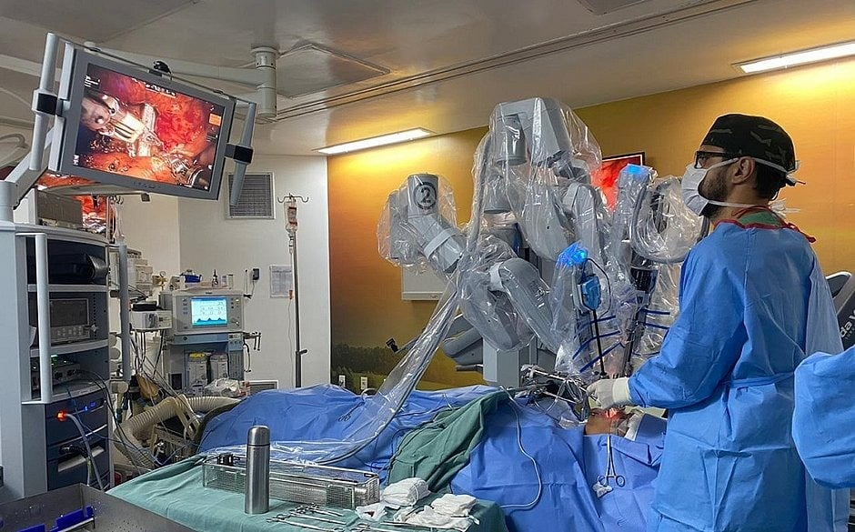

Veja abaixo como a tecnologia está ajudando a saúde
Robo Cirúrgico
O sistema robótico é utilizado com sucesso por médicos cirurgiões em centenas de cirurgias para diversas especialidades, como cirurgias colorretais, gastrointestinais, ginecológicas, hérnias, urológicas, além de cirurgia geral.
clique para saber maisIA no Laborario
A IA é capaz de analisar um grande volume de dados de exames anteriores e casos similares, o que ajuda a identificar padrões sutis que não seriam possíveis de detectar para os seres humanos. Além disso, com algoritmos de aprendizado, a Inteligência Artificial também pode aprimorar a capacidade dos médicos de identificar doenças e condições médicas em estágios iniciais. Dessa forma resultando em tratamentos otimizados e aumentando as chances de cura.
clique aqui para saber maisMariana Perroni
Mariana Perroni, médica intensivista e clinical lead do Google Health, para falar sobre como a tecnologia e o uso de dados estão transformando a medicina e trazendo inovações para o setor da saúde.
clique aqui e veja a entrevista